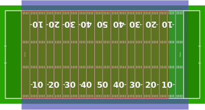
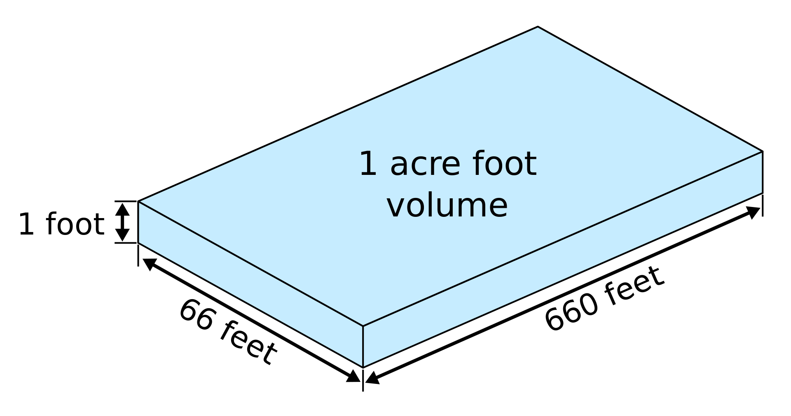

Most of the water in this region comes from non-renewable underground aquifers [1]. The rest comes from rivers
such as the Colorado which are shrinking due to climate change [2]. Not only is it the fastest growing region of
the United States [3], it is also responsible for billions of dollars in agricultural production [4]. Arizona
Arizona's total statewide water consumption in 2017 was approximately 7 million acre-feet [6]. But what does that much water even look like? First, try imagining an acre. 1 acre = 43,560 square feet or almost 1 football field.
An acre-foot, which is commonly used to measure water, is simply 1 acre of water filled 1 foot high.
Now imagine those dimensions but 7,000,000 feet high! That's how much water Arizona uses in a single year.
To help you imagine such an impossibly large number, see how long it takes to scroll to the bottom of this
page.
Each pixel represents 1 foot of water.
1 foot
Shaquille O'Neal
Male Giraffe
Boeing 737 (length)
Statue of Liberty
Empire State building
Burj Khalifa
Height planes fly at
100,000 feet.
200,000 feet.
300,000 feet.
400,000 feet.
500,000 feet.
600,000 feet.
700,000 feet.
800,000 feet.
900,000 feet.
1,000,000 feet.
1,100,000 feet.
1,200,000 feet.
1,300,000 feet.
1,400,000 feet.
1,500,000 feet.
1,600,000 feet.
1,700,000 feet.
1,800,000 feet.
1,900,000 feet.
2,000,000 feet.
2,100,000 feet.
2,200,000 feet.
2,300,000 feet.
2,400,000 feet.
2,500,000 feet.
2,600,000 feet.
2,700,000 feet.
2,800,000 feet.
2,900,000 feet.
3,000,000 feet.
3,100,000 feet.
3,200,000 feet.
3,300,000 feet.
3,400,000 feet.
3,500,000 feet.
3,600,000 feet.
3,700,000 feet.
3,800,000 feet.
3,900,000 feet.
4,000,000 feet.
4,100,000 feet.
4,200,000 feet.
4,300,000 feet.
4,400,000 feet.
4,500,000 feet.
4,600,000 feet.
4,700,000 feet.
4,800,000 feet.
4,900,000 feet.
5,000,000 feet.
5,100,000 feet.
5,200,000 feet.
5,300,000 feet.
5,400,000 feet.
5,500,000 feet.
5,600,000 feet.
5,700,000 feet.
5,800,000 feet.
5,900,000 feet.
6,000,000 feet.
6,100,000 feet.
6,200,000 feet.
6,300,000 feet.
6,400,000 feet.
6,500,000 feet.
6,600,000 feet.
6,700,000 feet.
6,800,000 feet.
6,900,000 feet.
7,000,000 feet.
[1] https://www.srpnet.com/grid-water-management/water-management/where-water-from
[2] https://www.cpr.org/2021/11/19/colorado-river-water-compact-climate-change/
[3] https://www.census.gov/library/stories/2019/02/fast-growth-in-desert-southwest-continues.html
[5] https://www.desertmuseum.org/earthcamp/posters/Weatherbee.ECFE13.pdf
[6] https://www.arizonawaterfacts.com/water-your-facts